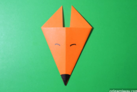
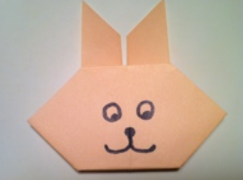

Easy Origami Making
Origami Fox

Steps:
- Start with a square piece of origami paper. If you only have regular 8.5x11 paper, follow these instructions to make a square sheet.
- Fold paper in half by folding the top corner to the bottom corner.
- Let's make a line in the center. Fold in half again by folding left corner to right corner, then unfold.
- Fold the left and right triangle edges toward the center, but not all the way to the center.
- Turn the figure over and draw on the face.
Origami Rabbit

Steps:
- Start with a square piece of origami paper with white side up. If you only have regular 8.5x11 paper, follow these instructions to make it into a square sheet
- Fold the paper in half by folding the bottom corner to the top corner, then unfold.
- Now fold the left corner to the right corner, then unfold.
- Fold a small portion of the triangle base up as shown.
- Fold the left and right bottom edges up at the center as shown. These are the origami rabbit ears.
- Turn the figure over.
- Fold the top corner of the head down.
- Fold the bottom corner of the chin up as shown, then draw on the face and you're done.